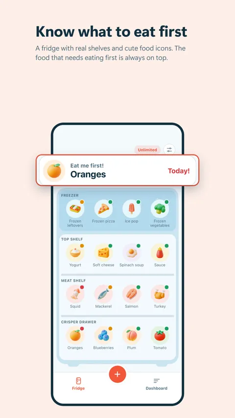

기한이 가까운 음식부터 먹어요
Chantha는 iPhone용 간단한 냉장고 관리 앱입니다. 냉장고에 넣은 음식과 기한 날짜를 입력하면 먼저 먹어야 할 음식을 보여 주고, 기한이 지나기 전에 알려 드립니다.
Chantha는 iPhone용 간단한 냉장고 관리 앱입니다. 냉장고에 넣은 음식과 기한 날짜를 입력하면 먼저 먹어야 할 음식을 보여 주고, 기한이 지나기 전에 알려 드립니다.



한 번에 10개까지 무료. 한 번 구매하면 개수 제한이 없어집니다. 구독 없음.